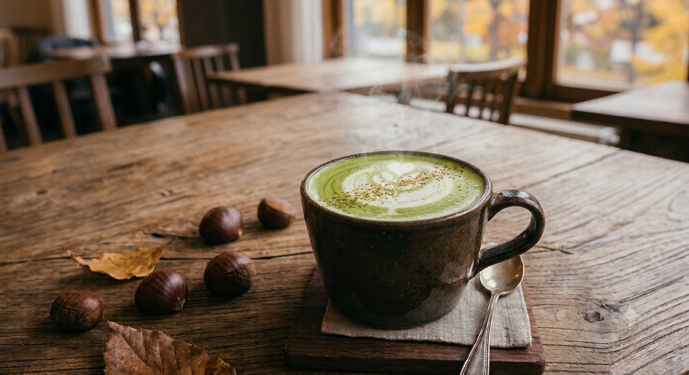
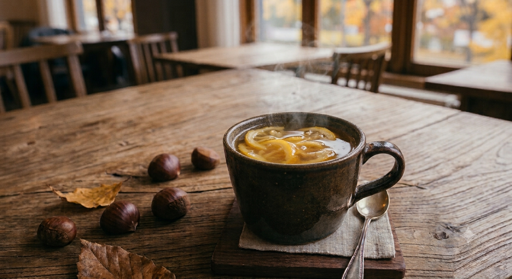
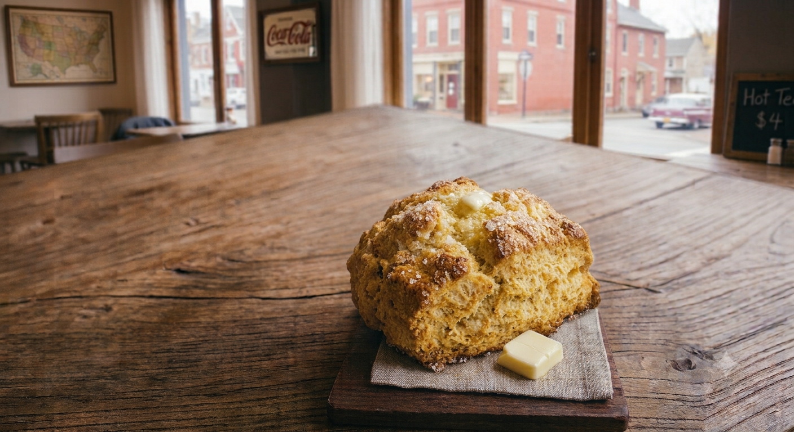
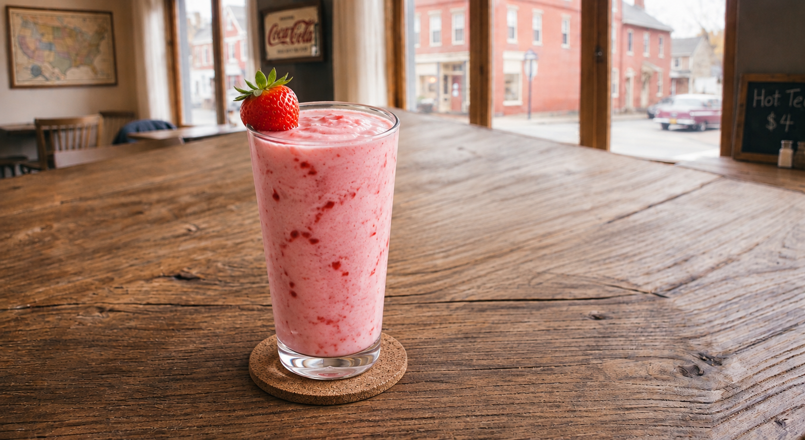
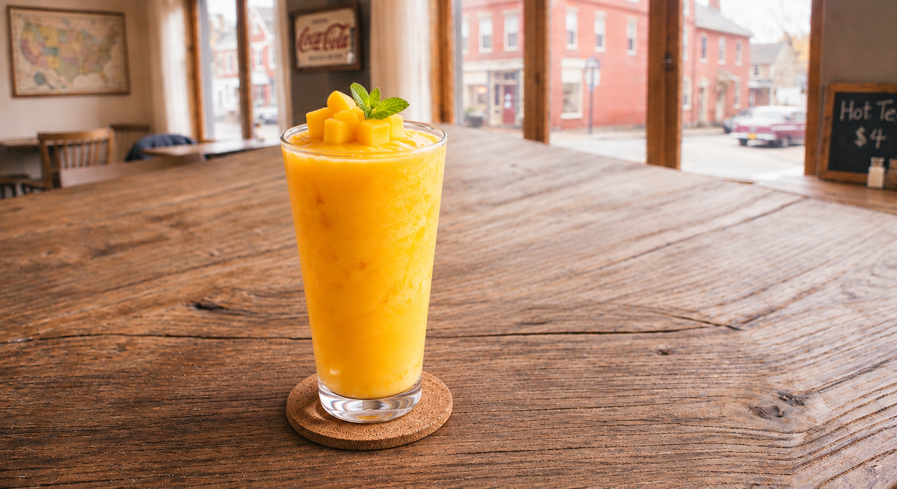
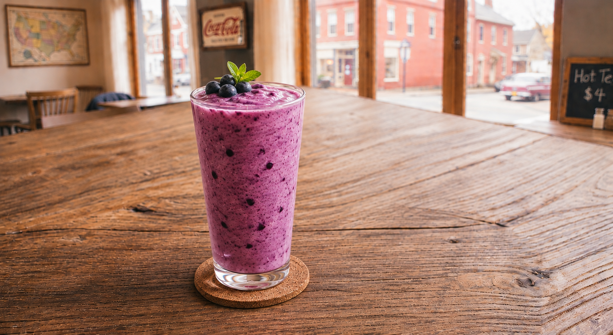
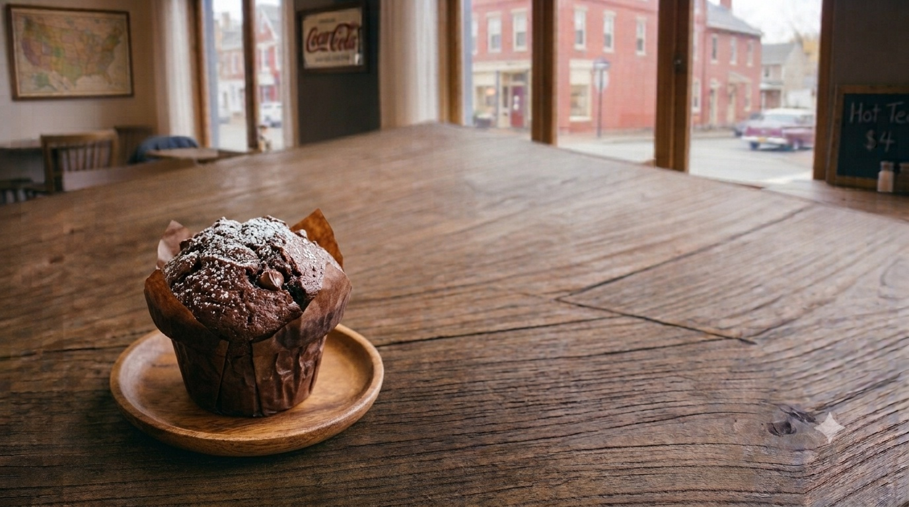

밤 라테
밤 크림이 올라간 라떼
5,500원영양성분 확인
- 열량 285 kcal
- 당류 28 g
- 단백질 7 g
- 카페인 75 mg
영양성분은 기본 음료 한 잔(350 mL) 또는 베이커리 한 개(80 g) 기준
밤 크림이 올라간 라떼
5,500원기본중에 기본
3,500원커피에 우유
4,500원
말차에 우유
5,000원
유자청에 따뜻한 차
4,200원
고소한 스콘
3,200원
요거트에 딸기
5,600원
망고에 얼음
5,400원
블루베리에 얼음
5,500원자몽에 사이다
4,900원레몬청에 사이다
4,700원복숭아 아이스티
4,300원카페라떼에 바닐라 시럽
4,800원
초콜릿 조각 머핀
3,500원